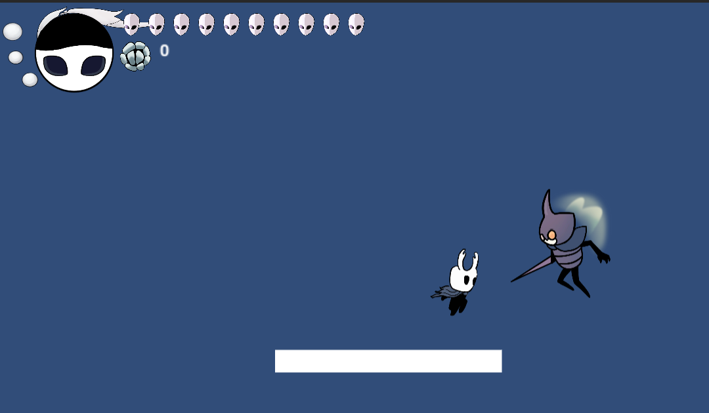

Vertical Slice
The Project
In this project I worked with 3 others to remake a 10 second clip of a populair video game. We were assigned to remake a small part of the game Hollow knight. First we did research on what game engine Hollow knight used and found out it was the unity engine. Then we searched what type of characters animations they used and found out they used sprite sheets. With this info we made the game the same way and set up a git for it.
My Part
In the team I was the git master helping every one in the team with the git work flow. I also programmed the attack of the player that had to be able to be at 8 different points around the player.